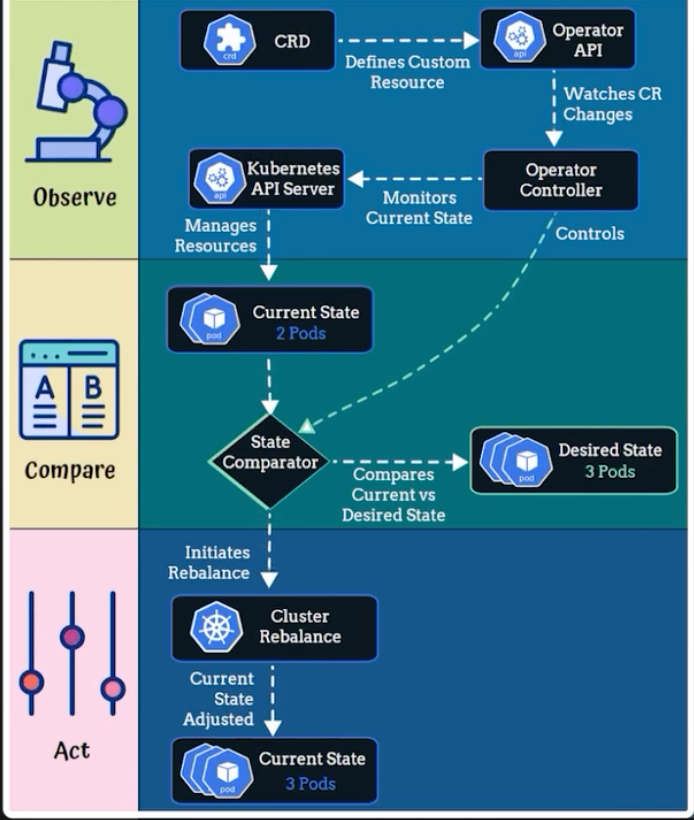

Kubernetes Operators
In the following section all I’m trying to do is understanding what the heck is Kubernetes Operators, what do they do, if they are missing is there something else could replace them. How do they differ from Helm, Controller and even a simple manifest file.
Kubernetes Operator is a specialized, advanced extension of a controller. It combines a custom controller with Custom Resource Definitions (CRDs) to encapsulate human operational knowledge (e.g., how to back up a database or handle a failover) into automated code.

Google Gemini
K8s operators are software extensions that use K8s API and custom control loops to automate the deployment, scaling, and life-cycle management of complex applications.
How do they work:
- Custom Resource Definition (CRDs)
-
define new, application-specific object types in the K8s API.
- Custom Controllers
-
Run as loops that continuously watch the actual state of your cluster and compare it against the desired state defined in the custom resources, fixing differences automatically.
- Day-2 Operations
-
Handle complex tasks like automated backups, failovers, upgrades, and scaling without manual intervention.
| Title | Description |
|---|---|
The core architecture and concepts plus design principles. |
|
A community curated list of comprehensive list of SDKs, frameworks, and tutorials. |
|
Explore to discover and install pre-installed operators for custom databases, monitoring tools, and services. |
ME
It is a software extension. It uses the K8s API and custom control loop. It automates the deployment, scaling, and life-cycle management of complex applications.
Cloud-native operators
In the cloud-native ecosystem, there are a list of Operators can be used to achieve to the day-2 operations. In the following list, I share my experience regarding those Operators.
| Operator | Primary/Focus | Workload type | Key system advantage | Core Day-2 operations automated |
|---|---|---|---|---|
Security |
||||
Security/TLS |
Certificate lifecycle |
Automated X.509 issuance and zero-downtime renewals |
Proactive certificate renewal loops, ACME challenge solving, and Secret rotation tracking |
|
Relational database |
||||
Relational database |
Stateful (PostgreSQL) |
Production-ready high availability (Patroni) and PITR backups |
pgBackRest orchestration, automated failover voting, Point-In-Time Recovery (PITR), and minor-version rolling updates |
|
Relational Database |
Stateful (PostgreSQL) |
Modern DevOps-native design relying on K8s replication instead of external tools |
Native standard declarative backup schedules, switchover/failover orchestration, and seamless online database scaling. |
|
Relational Database |
Stateful (PostgreSQL) |
Infrastructure-focus Spilo clusters tailored for AWS/GCP backends |
WAL-E/WAL-G cloud storage log shipping, database cloning, and automated connection pooling via Pgbouncer |
|
Relational Database |
Stateful (MySQL Engine) |
Manages complex InnoDB cluster consensus and proxy router routing |
Automated physical back-ups, replication lag tracking, proxy router repointing, and safe master pod failovers |
|
Relational Database |
Stateful (MariaDB Engine) |
Streamlines declarative schema bootstrapping and replication topologies |
Declarative SQL script execution, Galera Cluster replication monitoring, and automated backup bucket syncs. |
|
Monitoring and observability |
||||
Observability |
Monitoring engine |
Implements Monitoring-as-Code via dynamic target scraping |
Hot-reloading configurations, shard management for heavy scrape loads, and Alertmanager routing adjustments |
|
Log search & analytics |
Semi-structured documents |
Automates shared routing, hot/warm tiers, and Kibana clustering |
Index Lifecycle Management (ILM), automatic shard reallocation, snapshot repository mapping (S3/GCS), and cluster rolling restarts |
|
NoSQL |
||||
In-Memory Cache |
Key-Value store |
Automated Sentinel elections and sub-millisecond failover routing |
Redis Sentinel master promotion, slot re-sharding for cluster mode, and configuration updates of persistent AOF/RDB files |
|
[CockroachDB] |
Distributed SQL |
Globally consistent data |
Out-of-the-box multi-region horizontal scaling with ACID compliance |
Multi-region node balancing, automated range splitting, cluster localization tweaks, and zero-downtime software migrations |
[etcd] |
Distributed key-value |
Critical configuration/state |
Coordinates cluster state locking, snapshot restorations, and quorum health |
Quorum resizing, snapshot compaction, defragmentation, and membership recovery if cluster split-brain occurs |
[MongoDB] |
NoSQL document store |
JSON/BSON data |
Manages complex replica sets, shard keys, and live resizing |
Replica set election management, sharded cluster balancing, storage resizing without downtime, and point-in-time snapshot restorations |
[Cassandra] |
NoSQL columnar database |
High-throughput write stor |
Handles token ring topologies, node repairs, and keyspace scaling |
Token ring anti-entropy repairs, nodetool automation, cluster keyspace scaling, and rolling topology patches |
Storage, disk, data store |
||||
Unified storage infrastructure |
Raw disk orchestration |
Turns bare-metal unformatted drives into block, file, and object storage |
Disk replacement workflows, automated data rebalancing, cluster resizing, and deep hardware health checks |
|
Object Storage-as-a-Service |
Multi-Tenant S3 API |
High-performance, isolated, software defined S3 cloud endpoints |
Online drive capacity expansion, programmatic multi-tenant IAM rotation, and zero-downtime tenant upgrades |
|
Routing, DNS, and Tools |
||||
Automation Blueprinting |
Framework/Tooling |
Not an application operator; it packages Ansible roles to build operators |
Re-running continuous reconciliation loops for custom legacy apps, and upgrading without downtime, and point-in-time snapshot restorations |
|
Network infrastructure |
Core cluster routing |
Manages CoreDNS instances natively inside Red Hat OpenShift environments |
Dynamic upstream nameserver routing updates, cache tuning adjustments, and CoreDNS scaling depending on network load |
|
Traffic routing |
API Ingress controller |
Translates K8s Ingress resources into dynamic gateway plugins |
Hot-reloading proxy configurations, syncing routing cache stores, and zero-downtime plug-in enforcement updates |
|
Operators |
Feature/Aspect |
||
|---|---|---|---|
Primary focus |
Complexity level |
Key advantage |
|
cert-manager |
Security & encryption (TLS) |
Lightweight |
Eliminates manual certificate renewals |
Crunch Postgres (PGO) |
Data storage & persistence |
Extremely high (Stateful) |
Safe database failovers without data loss |
Prometheus |
Cluster & app observability |
Moderate to high |
Implements monitoring as code |
Storage |
|||
Feature/aspect |
|||
Storage paradigm |
Hardware layer |
Complexity & footpring |
Best used for |
Rook Ceph |
|||
Unified: Block, FIle, and Object |
Consumes )raw, unformatted disks_ |
Heavy. Requires massive compute resources and a minimum of 3 nodes. |
Running on bare-metal/on-prem infrastructure where we need to build our own robust EBS/EFS equivalent. |
MinIO |
|||
Object storage only (strictly S3 API) |
Consumes existing StorageClasses (formatted volumes |
Lightweight and highly streamlined. |
Providing lightning-fast S3 endpoints for machine learning pipelines, log targets, or media storage. |
Opinions on online forums like r/Kubernetes highlight that some engineering teams actually run both together. Because |
|||
CertManager
The cert-manager Operator automates X.509 certificate management. It ensures applications have valid TLS certificates and automatically renews them before they expire.
In CertManager,
-
the difference between an
Issuerand aClusterIssuercomes down entirely to scope and access control -
the
desired stateof a certificate defines its exact technical configuration
Feature |
|
|
Scope |
Namespaced (lives inside a specific namespace) |
Cluster-scope (global across the entire cluster) |
Accessibility |
Can only issue certificates for secrets in the same namespace. |
Can issue certificates for secrets in any namespace. |
Use case |
best for multi-tenant clusters where different teams or applications manage their own separate credentials and domains. |
Best for global, shared cluster infrastructure like automated |
Manifest Kind |
|
|
The desired state of certificates
In K8s, the operator pattern relies on declarative configuration. When we create a Certificate custom resource, we are telling cert-manager the desired state we want it to maintain. So, when anything deviates from this blueprint (such as an expiration window approaching), the cert-manager operator intercepts it and takes corrective action.
- Key components of desired states
-
-
Secret Binding (
secretName) specifies the exact name of the K8sSecretwherecert-managershould inject and keep the private key and signed certificate data. -
Identity & domains (
dnsNames/ipAddresses) defines the list of Subject Alternative Names (SANs) or IP addresses the certificate is explicitly authorized to secure (e.g.,://example.com). -
The Authority (
issuerRef) points to the specificIssuerorClusterIssuerthat might sign the certificate request. -
Lifespan Constraints (
duration&renewBefore) defines how long the certificate should be valid (e.g., 90 days) and exactly how close to expirationcert-managershould proactively step in to trigger an automated renewal loop (e.g., renew 15 days before expiration). -
Technical Specs (
privateKey) configures cryptographic preferences, specifying whether to use an RSA or ECDSA algorithm and the corresponding key size or curve.
-
- Core Custom Resources (CRDs)
-
-
IssuerorClusterIssuerdefines where to get certificates. For example, Let’s Encrypt, HashiCorp Vault, or private PKI.
-
- Certificate
-
-
Defines the desired state of a certificate such as domains, secret name, and validity duration.
-
Database (SQL and NoSQL)
Crunchy Postgres for Kubernetes (PGO)
The Crunchy Postgres Operator handles the complex lifecycle of production-ready PostgresSQL databases. #Databases are stateful, making them notorious to scale and manage in an ephemeral environment like K8s.
- Core Custom Resources (CRDs)
-
-
PostgresClusterrepresents an entire multi-node database architecture.
-
Oracle MySQL Operator for K8s
Official engine for InnoDB clusters and the Percona Operator for MySQL is the enterprise-grade open-source option are the main platforms. The official operator centers on structural stability {question}. It sets up a localized MySQL Router proxy pod alongside an InnoDB Cluster. Applications point to the Router, while the operator handles the heavy lifting underneath: monitoring replication lag, managing active primary/replica databases, and orchestrating failovers without risking transactional database corruption.
| Feature/Aspect | Oracle MySQL Operator |
|---|---|
Primary workload type |
Heavily structured, transactional relational data (ACID compliant).) |
High availability architecture |
InnoDB Cluster with group replication and MySQL router. |
Storage requirements |
High disk footprint with absolute strictness on write consistency |
Day-2 backup automation |
Fully automated volume snapshots or logical/physical backups |
Topology flexibility |
Supports global, namespace-scoped, or single standalone setups |
Opstree Redis
For the open-source architecture Opstree is the dominant choice. The Redis Enterprise Operator (commercial or hybrid) are the industry leaders. Since Redis is in-memory, the operator is optimized for speed and scaling boundaries rather than complex data formatting. It streamlines setting up Redis Sentinel arrays---meaning if our primary master pod fails, the operator manages the automated voting infrastructure to elect a new master pod withing milliseconds and updates our application’s routing proxy instantly.
| Feature/Aspect | Opstree Redis Operator |
|---|---|
Primary workload type |
High-speed, in-memory caching and key-value store |
High availability architecture |
Sentinel Mode (replication failover) or Cluster Mode (native sharding) |
Storage requirements |
Low disk, massive RAM dependency. Can safely leverage ephemeral local NVMe. |
Day-2 backup automation |
RDB and AOF persistence configuration orchestration |
Topology flexibility |
Deployable as cluster-wide or namespace-scoped |
Monitoring and observability
ELK Stack | Elastic cloud on K8s (ECK)
It is the official operator created and maintained by Elastic. It handles the entire suite: ElasticSearch, Kibana, APM Server, Beats, and Logstash. It operates as an endlessly looping Site Reliability Engineer for our search cluster. Since ElasticSearch components rely heavily on each other, ECK coordinates the rolling upgrade of data shards across individual nodes so that our application query speed never drop during a patch. It natively configures secure mTLS between Kibana, Logstash, and our ElasticSearch cluster seamlessly out of the box.
| Feature/Aspect | Opstree Redis Operator |
|---|---|
Primary workload type |
Semi-structured data, log analytics, full-text search |
High availability architecture |
Native master/data node sharding and replica indices |
Storage requirements |
Massive disk footprints. Relies on fast network/local block storage |
Day-2 backup automation |
Snapshot repositories directly integrated to S3, GCS, or MinIO |
Topology flexibility |
Can deploy global operators or scope down to a namespace |
Prometheus
Prometheus Operator simplifies the deployment and management of Prometheus-based monitoring stacks. In a raw setup, keeping target scraping configurations updated as pods spin up and down is difficult.
- Core Custom Resources (CRDs)
-
-
Prometheusconfigures the core monitoring engine (replicas, storage retention, sharding). -
ServiceMonitor/PodMonitortells Prometheus which K8s services/pods to dynamically discover and scrape for metrics using simple label selectors.
-
Storage (persistent data)
Rook Ceph
The Rook Operator acts as a cloud-native storage orchestrator. Its most stable and primary blueprint turns Ceph into a self-managing K8s service.
- Core Custom Resources (CRDs)
-
-
CephCluster -
CephBlockPool -
CephFilesystem -
CephObjectStore
-
Day-2 operations
-
Rook provisions raw, unformatted physical hard drives (
EBSvolumes or localNVMedisks) attached to a cluster nodes and spins up daemons (MONs,OSDs, andMGRs) to manage them -
Handles disk replacement
-
Auto-healing re-replication if a node failes
-
Zero-downtime Ceph upgrades
- Storage provided (unified storage)
-
-
Block storage (
RWOfor standard apps) -
Shared File storage (
RWXfor multi-pod access) -
S3-compatibleObject storage
-
MinIO
The MinIO Operator is a first-party tool built to deliver multi-tenant Object Storage-as-a-Service. Unlike Rook, MinIO does not try to manage low-level raw disks or provide block/file storage; it focuses on entirely on high-performance, S3-compatible object APIs.
- Core Custom Resources (CRDs)
-
-
Tenant?? -
In specialized enterprise AIStor versions,
ObjectStore
-
Day-2 operations
-
Isolating storage clusters by namespaces into independent "Tenants"
-
Declaring a Tenant
-
Building the necessary
StatefulSets, -
Configuring network routing
-
Handling
mTLSencryption keys internally via automated certificate management -
Managing capacity scaling/expansion without downtime
-
S3-Compatible object storage
"S3-Compatible" means a storage system uses the exact same Application Programming Interface (API) that Amazon Simple Storage Service (AWS S3) invented.
Object storage treats data as flat "objects" bundled with unique IDs and metadata; instead of organizing them into a rigid hierarchy of folders, subfolders, and files (e.g., a PC’s hard drive).
- Why S3-Compatibility matters
-
-
No vendor lock-in: Code written to talk to S3-compatible API can talk to others without any required changes; AWS S3, MinIO cluster, or RookCeph.
-
The industry standard: Nearly every modern cloud-native application, database backup tools (like
pgBackRestorVelero), and AI/ML pipeline (like KubeFlow or MLflow) expects an S3 endpoint out of the box. -
Standardized actions: Applications communicate using predictable HTTP verbs (
GET,PUT,DELETE) over the standard web protocols.
-
Multi-tenant object storage-as-a-service
Multi-tenancy means a single underlying piece of infrastructure is divided up to serve multiple independent users, teams, or applications (the "tenants"). Providing this "as-a-service" means that provisioning, scaling, and meaning these environments is fully automated.
Operators ensures the following three boundaries when delivering a multi-tenant object storage-as-a-service:
🔒Cryptographic & logic isolation:
Each tenant likes as their entire storage system. They cannot access the resources of other tenants; buckets, objects. The Operator implements it by creating different K8s namespaces, separating storage access keys, and distinct IAM policies.
📊Performance & resource quotas:
A single runaway application shouldn’t crash the storage for everyone else. Multi-tenant operators allow cluster administrators to set strict limits on:
-
Capacity: Each tenant can store up to the specified limits; Tenant A stores up to 500GB.
-
Compute: Restricting the RAM and CPU cores dedicated to a specific tenant’s storage controllers.
🛟Independent upgrades & lifecycles:
The operator treats tenants as decoupled custom resources (like MinIO’s `Tenant CRD), we can upgrade the software version or expand the storage capacity of Tenant A’s cluster without causing a single second of downtime for other tenants.
- Storage provided (Pure object storage)
-
-
It consumes already-formatted underlying K8s
StorageClassesand wraps them into an ultra-fast S3 API.
-